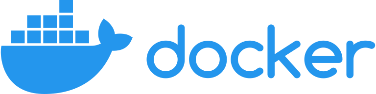

Konteneryzacja środowiska deweloperskiego
Projektowanie i programowanie systemów internetowych II
wykład 1 z 8

mgr inż. Krzysztof Rewak
Zakład Informatyki, Wydział Nauk Technicznych i Ekonomicznych
Collegium Witelona Uczelnia Państwowa
Blumilk sp. z o.o.
Agenda
- Ramowy plan semestru
- Warunki zaliczenia kursu
- Metodyki zarządzania projektami
- Podsumowanie
Planowany rozkład jazdy
- Konteneryzacja środowiska deweloperskiego (jesteśmy tutaj!)
- Testowanie systemów internetowych
- Automatyzacja utrzymania jakości
- Projektowanie API
- Reaktywny frontend
- Architektura sterowana zdarzeniami
- Inne wzorce architektoniczne
- Bezpieczeństwo systemów internetowych
Formy zajęć
wykład to teoretyczna część kursu; podczas ośmiu spotkań zostaną
przedstawione bardziej zaawansowane zagadnienia związane z aplikacjami webowymi
projekt to praktyczna część kursu; w trakcie semestru studenci będą
pracować zespołowo nad projektowaniem, implementacją oraz wdrożeniem konkretnego systemu internetowego
Wykład kończy się egzaminem podsumowującym wiedzę przyswojoną w trakcie cyklu kursów. Egzamin - w
zależności od liczby przystępujących osób - odbędzie się w formie pisemnej lub ustnej. Zagadnienia do
egzaminu zostaną przedstawione na ostatnim wykładzie.
Student, który otrzyma z projektu ocenę niedostateczną, nie może podchodzić do egzaminu.
Ponadto na wykładach:
a) będzie sprawdzana lista obecności na zasadzie białej listy
b) będzie mierzona (pozytywna i negatywna) aktywność studentów.
Zachęcam do uczęszczania na wykłady.
Ocena końcowa
Ω = 0.3 W + 0.7 P
Ocena niedostateczna z jednej formy rzutuje na ocenę niedostateczną za całość!
Bonusy
Osoby, które otrzymały projektu ocenę bardzo dobrą, zostaną zwolnione z
egzaminu z przepisaną oceną.
Wysoka frekwencja oraz aktywność na wykładach mogą rzutować na obniżenie progu przepisywanej oceny do
dobrej plus dla indywidualnych studentów.
Quizy
W trakcie semestru organizowane mogą być dodatkowe zwolnienia z egzaminu w formie interaktywnych quizów,
których zakres będzie obejmował materiał z bieżącego wykładu.
Student, który otrzyma najwięcej punktów z danego quizu, zostanie zwolniony z egzaminu z przepisaną oceną
z projektu.
Problemy środowiskowe
Przykładowy system internetowy może wymagać na przykład takiego zestawu części składowych:
- PHP w wersji 8.3.11 (w tym gnupg, libpng-dev, gd i redis) + Composera 2.7.9
- Node.js w wersji 21.7.3
- nginxa w wersji 1.25.2
- bazy PostgreSQL w wersji 15.5 z włączonym rozszerzeniem
unaccent - Redisa w wersji 7.0.11
Zarządzanie tym ręcznie to proszenie się o kłopoty.
Rozwiązanie
Rozwiązaniem może być konteneryzacja, czyli zamknięcie poszczególnych serwisów w tzw... kontenery.
Kontener to lekkie, izolowane środowisko, które zawiera aplikację oraz wszystkie jej zależności,
umożliwiając jej uruchomienie na dowolnym systemie z zainstalowanym środowiskiem uruchomieniowym. Dzięki
temu aplikacje mogą być łatwo przenoszone między różnymi środowiskami bez konieczności modyfikacji
konfiguracji czy instalowania dodatkowego oprogramowania.
Kontener korzysta z zasobów systemu hosta, takich jak pamięć RAM i przestrzeń dyskowa, ale działa w
izolowanym środowisku, z którym kontaktuje się poprzez wystawione porty.
Jednym z najpopularniejszych rozwiązań tego typu jest Docker.

Witaj, świecie
docker run --rm python:latest python -c 'print("Hello world!")'docker runuruchamia kontener--rmoznacza, że kontener się usunie po zakończeniu zadaniapython:latestoznacza, że będzie to kontener z najnowszą wersją Pythonapython -c 'print("Hello world!")'to polecenie, które chcemy uruchomić
DockerfileFROM python:3.12.6 COPY . /app WORKDIR /app CMD ["python", "hello.py"]
hello.pyprint("Hello world!")(cli)docker build -t hello .
docker run hello
# Hello world!Highlights
- w projektach IT znajdziemy cały przekrój różnych podejść do zarządzania
- trudno powiedzieć, jaka metodyka jest najlepsza, ale przykładowo duże państwowe projekty raczej będą organizowane w PRINCE2, a nie Scrumie
- tradycyjne metodyki taka jak waterfall są sztywne i pasują do stabilnych projektów
- agile jest bardziej elastyczny, ale przez to trudniej oszacować budżet
- zarządzanie projektem musi dostosować się do wszystkich interesariuszy
Źródła i do dalszego poczytania